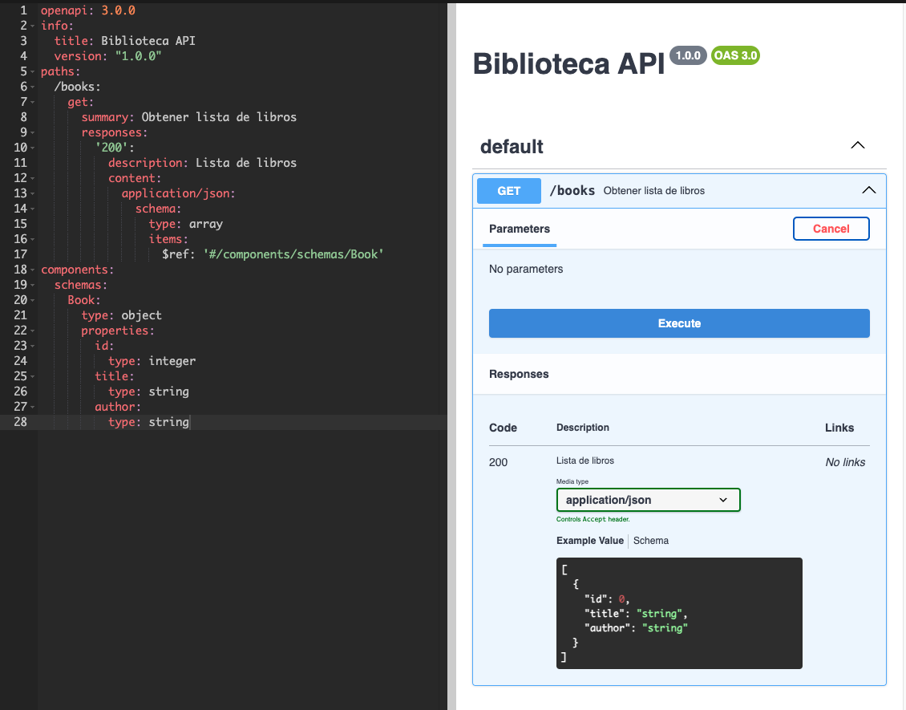

<!DOCTYPE html>
<html lang="en">
  <head>
    <meta charset="utf-8" />
    <meta name="viewport" content="width=device-width, initial-scale=1.0, maximum-scale=1.0, user-scalable=no" />

    <title></title>
    <link rel="stylesheet" href="dist/reveal.css" />
    <link rel="stylesheet" href="dist/theme/beige.css" id="theme" />
    <link rel="stylesheet" href="plugin/highlight/zenburn.css" />
	<link rel="stylesheet" href="css/layout.css" />
	<link rel="stylesheet" href="plugin/customcontrols/style.css">
	<link rel="stylesheet" href="plugin/chalkboard/style.css">


    <script defer src="dist/fontawesome/all.min.js"></script>

	<script type="text/javascript">
		var forgetPop = true;
		function onPopState(event) {
			if(forgetPop){
				forgetPop = false;
			} else {
				parent.postMessage(event.target.location.href, "app://obsidian.md");
			}
        }
		window.onpopstate = onPopState;
		window.onmessage = event => {
			if(event.data == "reload"){
				window.document.location.reload();
			}
			forgetPop = true;
		}

		function fitElements(){
			const itemsToFit = document.getElementsByClassName('fitText');
			for (const item in itemsToFit) {
				if (Object.hasOwnProperty.call(itemsToFit, item)) {
					var element = itemsToFit[item];
					fitElement(element,1, 1000);
					element.classList.remove('fitText');
				}
			}
		}

		function fitElement(element, start, end){

			let size = (end + start) / 2;
			element.style.fontSize = `${size}px`;

			if(Math.abs(start - end) < 1){
				while(element.scrollHeight > element.offsetHeight){
					size--;
					element.style.fontSize = `${size}px`;
				}
				return;
			}

			if(element.scrollHeight > element.offsetHeight){
				fitElement(element, start, size);
			} else {
				fitElement(element, size, end);
			}		
		}


		document.onreadystatechange = () => {
			fitElements();
			if (document.readyState === 'complete') {
				if (window.location.href.indexOf("?export") != -1){
					parent.postMessage(event.target.location.href, "app://obsidian.md");
				}
				if (window.location.href.indexOf("print-pdf") != -1){
					let stateCheck = setInterval(() => {
						clearInterval(stateCheck);
						window.print();
					}, 250);
				}
			}
	};


        </script>
  </head>
  <body>
    <div class="reveal">
      <div class="slides"><section  data-markdown><script type="text/template"><!-- .slide: class="drop" data-background-image="Adjuntos/slides.eap.portada.png" -->
<div class="" style="position: absolute; left: 0px; top: 0px; height: 700px; width: 960px; min-height: 700px; display: flex; flex-direction: column; align-items: center; justify-content: center" absolute="true">

# OpenAPI
</div></script></section><section  data-markdown><script type="text/template"><!-- .slide: class="drop" -->
<div class="" style="position: absolute; left: 0px; top: 0px; height: 700px; width: 960px; min-height: 700px; display: flex; flex-direction: column; align-items: center; justify-content: center" absolute="true">

# ¿Qué es?
</div>

<aside class="notes"><p>OpenAPI es una especificación que define una interfaz estándar para describir, producir, consumir y visualizar APIs REST. Anteriormente conocida como Swagger.</p>
<p>¿Por qué es importante?</p>
<ul>
<li>Facilita la comunicación entre equipos.</li>
<li>Genera documentación interactiva.</li>
<li>Puede automatizar la generación de código.</li>
</ul>
<!-- .slide: data-background-image="Adjuntos/slides.eap.png" --></aside></script></section><section  data-markdown><script type="text/template"><!-- .slide: class="drop" -->
<div class="" style="position: absolute; left: 0px; top: 0px; height: 700px; width: 960px; min-height: 700px; display: flex; flex-direction: column; align-items: center; justify-content: center" absolute="true">

# Enfoques de Uso

## Top-Down vs Bottom-Up
</div>

<aside class="notes"><p>Dos enfoques principales al usar OpenAPI:</p>
<ul>
<li><strong>Top-Down</strong>: Definir primero la API con OpenAPI, luego generar el código.</li>
<li><strong>Bottom-Up</strong>: Desarrollar la API primero y luego documentarla con OpenAPI.</li>
</ul>
<p>Elegir el enfoque adecuado depende del contexto, proyecto y del equipo.</p>
<!-- .slide: data-background-image="Adjuntos/slides.eap.png" --></aside></script></section><section  data-markdown><script type="text/template"><!-- .slide: class="drop" -->
<div class="" style="position: absolute; left: 0px; top: 0px; height: 700px; width: 960px; min-height: 700px; display: flex; flex-direction: column; align-items: center; justify-content: center" absolute="true">

# Enfoque Bottom-Up

## Pros y Contras
</div>

<aside class="notes"><p>hasta ahora estamos haciendo bottom-up, vemos pros y contras, ¿como sería el enfoque contrario?</p>
<h3 id="ventajas">Ventajas:</h3>
<ul>
<li>Permite una mayor flexibilidad en el desarrollo.</li>
<li>Más fácil de adaptar a cambios en requisitos.</li>
<li>Sincronizacion Docs/Codigo los consumidores de la API saben que lo que ven en la documentación es lo que está en el codigo</li>
</ul>
<h3 id="desventajas">Desventajas:</h3>
<ul>
<li>La documentación puede quedar desactualizada.</li>
<li>Puede resultar en inconsistencias si no se gestiona adecuadamente.</li>
<li>Modificaciones de Contrato</li>
<li>¿Versionado?</li>
</ul>
<p>es muy dificil gestionar el versionado de esta manera, la versión de la API tendría que ser independiente del codigo.</p>
<p>la API es un contrato que ha debido ser establecido en algun momento entre las partes. Si se actualiza automaticamente cuando cambio algo en codigo el contrato cambia sin que haya consenso</p>
<ul>
<li>endpoint</li>
<li>DTO</li>
<li>Respuesta de salida</li>
</ul>
<!-- .slide: data-background-image="Adjuntos/slides.eap.png" --></aside></script></section><section  data-markdown><script type="text/template"><!-- .slide: class="drop" -->
<div class="" style="position: absolute; left: 0px; top: 0px; height: 700px; width: 960px; min-height: 700px; display: flex; flex-direction: column; align-items: center; justify-content: center" absolute="true">

# Enfoque Top-Down
## Pros y Contras
</div>

<aside class="notes"><h3 id="ventajas">Ventajas:</h3>
<ul>
<li>Define claramente el contrato de la API antes de empezar a programar.</li>
<li>Facilita la colaboración entre desarrolladores y otros stakeholders.</li>
<li>Generación Automática de Código Código que no hay que mantener</li>
<li>Herramientas para trabajar hasta que hayamos implementado</li>
<li>Visualización del Objetivo Final</li>
</ul>
<p>poca libertad creativa, pero es que en un entorno colaborativo esto es complicado de gestionar.</p>
<p>Valor del qué queremos obtener vs cómo lo vamos a hacer</p>
<p>Esto requiere un análisis/acuerdo previo.</p>
<p>Tener estos requisitos de antemano en el trabajo lo solemos ver bien porque sabemos cual es el contexto de nuestro trabajo.</p>
<h3 id="desventajas">Desventajas:</h3>
<ul>
<li>Puede requerir más tiempo al principio.</li>
<li>Posible falta de flexibilidad ante cambios.</li>
<li>Debemos confiar en un tercero</li>
</ul>
<p>pero esto lo hacemos continuamente</p>
<ul>
<li>navegadores (hacemos un navegador para cada nueva aplicacion? os fiariais mas de un navegador que usen millones de personas o uno hecho por vosotros?)</li>
<li>Sistemas Operativos</li>
</ul>
<!-- .slide: data-background-image="Adjuntos/slides.eap.png" --></aside></script></section><section  data-markdown><script type="text/template"><!-- .slide: class="drop" -->
<div class="" style="position: absolute; left: 0px; top: 0px; height: 700px; width: 960px; min-height: 700px; display: flex; flex-direction: column; align-items: center; justify-content: center" absolute="true">

# ¿Enfoque Usado?
</div>

<aside class="notes"><p>preguntar por el enfoque usado hasta ahora en el curso básico</p>
<!-- .slide: data-background-image="Adjuntos/slides.eap.png" --></aside></script></section><section  data-markdown><script type="text/template"><!-- .slide: class="drop" -->
<div class="" style="position: absolute; left: 0px; top: 0px; height: 700px; width: 960px; min-height: 700px; display: flex; flex-direction: column; align-items: center; justify-content: center" absolute="true">

# Generación de Código
## Definicion OpenAPI
### Ejemplo Práctico
</div>

<aside class="notes"><p>Vamos a ver cómo generar automáticamente Controllers y DTOs utilizando una especificación OpenAPI en un proyecto Spring Boot.</p>
<ol>
<li>Definir un esquema OpenAPI (YAML o JSON).</li>
<li>Usar herramientas como <code>openapi-generator-maven-plugin</code> o Swagger Codegen.</li>
</ol>
<!-- .slide: data-background-image="Adjuntos/slides.eap.png" --></aside></script></section><section  data-markdown><script type="text/template"><!-- .slide: class="drop" -->
<div class="" style="position: absolute; left: 0px; top: 0px; height: 700px; width: 960px; min-height: 700px; display: flex; flex-direction: column; align-items: center; justify-content: center" absolute="true">


</div>

<aside class="notes"><p>Este esquema describe una API sencilla para una biblioteca con un endpoint /books que devuelve una lista de libros.
Generación de Controllers y DTOs
Con openapi-generator-maven-plugin</p>
<p>xml</p>
<pre><code class="language-yaml">openapi: 3.0.0
info:
  title: Biblioteca API
  version: &quot;1.0.0&quot;
paths:
  /books:
    get:
      summary: Obtener lista de libros
      responses:
        &#39;200&#39;:
          description: Lista de libros
          content:
            application/json:
              schema:
                type: array
                items:
                  $ref: &#39;#/components/schemas/Book&#39;
components:
  schemas:
    Book:
      type: object
      properties:
        id:
          type: integer
        title:
          type: string
        author:
          type: string
</code></pre>
<!-- .slide: data-background-image="Adjuntos/slides.eap.png" --></aside></script></section><section  data-markdown><script type="text/template"><!-- .slide: class="drop" -->
<div class="" style="position: absolute; left: 0px; top: 0px; height: 700px; width: 960px; min-height: 700px; display: flex; flex-direction: column; align-items: center; justify-content: center" absolute="true">

# Ejercicio Práctico

- &shy;<!-- .element: class="fragment" data-fragment-index="1" -->openapi.yaml
- &shy;<!-- .element: class="fragment" data-fragment-index="2" -->openapi-generator-maven-plugin
- &shy;<!-- .element: class="fragment" data-fragment-index="3" -->mvn clean install
- &shy;<!-- .element: class="fragment" data-fragment-index="4" -->Mirar código generado
</div>

<aside class="notes"><p>La idea es entender cómo OpenAPI puede automatizar parte del desarrollo, reduciendo errores y asegurando un contrato claro para las APIs.</p>
<p>Crear un archivo openapi.yaml en tu proyecto Spring Boot.
Configurar openapi-generator-maven-plugin en pom.xml.
Ejecutar mvn clean install para generar el código.
Revisar el código generado: Controller, DTOs, etc.</p>
<!-- .slide: data-background-image="Adjuntos/slides.eap.png" --></aside></script></section><section  data-markdown><script type="text/template"><!-- .slide: class="drop" data-background-image="Adjuntos/slides.eap.png" -->
<div class="" style="position: absolute; left: 0px; top: 0px; height: 700px; width: 960px; min-height: 700px; display: flex; flex-direction: column; align-items: center; justify-content: center" absolute="true">

# biblioteca

## Openapi.yml
</div></script></section><section  data-markdown><script type="text/template"><!-- .slide: class="drop" data-background-image="Adjuntos/slides.eap.png" -->
<div class="" style="position: absolute; left: 0px; top: 0px; height: 700px; width: 960px; min-height: 700px; display: flex; flex-direction: column; align-items: center; justify-content: center" absolute="true">

# Configuracion Plugin
</div></script></section><section  data-markdown><script type="text/template"><!-- .slide: class="drop" data-background-image="Adjuntos/slides.eap.png" -->
<div class="" style="position: absolute; left: 0px; top: 0px; height: 700px; width: 960px; min-height: 700px; display: flex; flex-direction: column; align-items: center; justify-content: center" absolute="true">

# Código Generado

## Carpeta `/target`
</div></script></section><section  data-markdown><script type="text/template"><!-- .slide: class="drop" data-background-image="Adjuntos/slides.eap.png" -->
<div class="" style="position: absolute; left: 0px; top: 0px; height: 700px; width: 960px; min-height: 700px; display: flex; flex-direction: column; align-items: center; justify-content: center" absolute="true">

## ¿cómo le digo usar mis servicios?
</div></script></section><section  data-markdown><script type="text/template"><!-- .slide: class="drop" data-background-image="Adjuntos/slides.eap.png" -->
<div class="" style="position: absolute; left: 0px; top: 0px; height: 700px; width: 960px; min-height: 700px; display: flex; flex-direction: column; align-items: center; justify-content: center" absolute="true">

# Implementar Interfaz

## implements BooksApiDelegate
</div></script></section><section  data-markdown><script type="text/template"><!-- .slide: class="drop" -->
<div class="" style="position: absolute; left: 0px; top: 0px; height: 700px; width: 960px; min-height: 700px; display: flex; flex-direction: column; align-items: center; justify-content: center" absolute="true">

# Beneficios

 -  Automatización: 
	Menos código manual, más consistencia.
- Documentación: 
	Documentación siempre actualizada y legible.
- Interoperabilidad: 
	Facilita la colaboración entre equipos y con clientes.
</div>

<aside class="notes"><p>Piensa en OpenAPI como un contrato que asegura que todos estamos en la misma página.
Conclusión
OpenAPI es más que una herramienta de documentación</p>
<p>Es una forma de alinear a todos los involucrados en el desarrollo de una API, desde los desarrolladores hasta los stakeholders.</p>
<!-- .slide: data-background-image="Adjuntos/slides.eap.png" --></aside></script></section><section  data-markdown><script type="text/template"><!-- .slide: class="drop" data-background-image="Adjuntos/slides.eap.png" -->
<div class="" style="position: absolute; left: 0px; top: 0px; height: 700px; width: 960px; min-height: 700px; display: flex; flex-direction: column; align-items: center; justify-content: center" absolute="true">

# ¿Preguntas o comentarios?
</div></script></section></div>
    </div>

    <script src="dist/reveal.js"></script>

    <script src="plugin/markdown/markdown.js"></script>
    <script src="plugin/highlight/highlight.js"></script>
    <script src="plugin/zoom/zoom.js"></script>
    <script src="plugin/notes/notes.js"></script>
    <script src="plugin/math/math.js"></script>
	<script src="plugin/mermaid/mermaid.js"></script>
	<script src="plugin/chart/chart.min.js"></script>
	<script src="plugin/chart/plugin.js"></script>
	<script src="plugin/customcontrols/plugin.js"></script>
	<script src="plugin/chalkboard/plugin.js"></script>

    <script>
      function extend() {
        var target = {};
        for (var i = 0; i < arguments.length; i++) {
          var source = arguments[i];
          for (var key in source) {
            if (source.hasOwnProperty(key)) {
              target[key] = source[key];
            }
          }
        }
        return target;
      }

	  function isLight(color) {
		let hex = color.replace('#', '');

		// convert #fff => #ffffff
		if(hex.length == 3){
			hex = `${hex[0]}${hex[0]}${hex[1]}${hex[1]}${hex[2]}${hex[2]}`;
		}

		const c_r = parseInt(hex.substr(0, 2), 16);
		const c_g = parseInt(hex.substr(2, 2), 16);
		const c_b = parseInt(hex.substr(4, 2), 16);
		const brightness = ((c_r * 299) + (c_g * 587) + (c_b * 114)) / 1000;
		return brightness > 155;
	}

	var bgColor = getComputedStyle(document.documentElement).getPropertyValue('--r-background-color').trim();
	var isLight = isLight(bgColor);

	if(isLight){
		document.body.classList.add('has-light-background');
	} else {
		document.body.classList.add('has-dark-background');
	}

      // default options to init reveal.js
      var defaultOptions = {
        controls: true,
        progress: true,
        history: true,
        center: true,
        transition: 'default', // none/fade/slide/convex/concave/zoom
        plugins: [
          RevealMarkdown,
          RevealHighlight,
          RevealZoom,
          RevealNotes,
          RevealMath.MathJax3,
		  RevealMermaid,
		  RevealChart,
		  RevealCustomControls,
		  RevealChalkboard, 
        ],


    	allottedTime: 120 * 1000,

		mathjax3: {
			mathjax: 'plugin/math/mathjax/tex-mml-chtml.js',
		},
		markdown: {
		  gfm: true,
		  mangle: true,
		  pedantic: false,
		  smartLists: false,
		  smartypants: false,
		},

		mermaid: {
			theme: isLight ? 'default' : 'dark',
		},

		customcontrols: {
			controls: [
				{ icon: '<i class="fa fa-pen-square"></i>',
				title: 'Toggle chalkboard (B)',
				action: 'RevealChalkboard.toggleChalkboard();'
				},
				{ icon: '<i class="fa fa-pen"></i>',
				title: 'Toggle notes canvas (C)',
				action: 'RevealChalkboard.toggleNotesCanvas();'
				},
			]
		},
      };

      // options from URL query string
      var queryOptions = Reveal().getQueryHash() || {};

      var options = extend(defaultOptions, {"width":960,"height":700,"margin":0.04,"controls":false,"progress":false,"slideNumber":false,"transition":"slide","transitionSpeed":"default"}, queryOptions);
    </script>

    <script>
      Reveal.initialize(options);
    </script>
  </body>

  <!-- created with Advanced Slides -->
</html>
